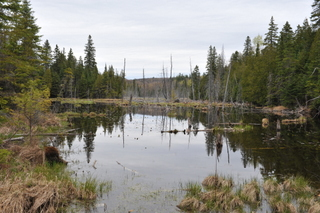
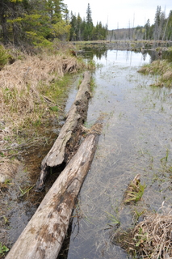

Lake Tours, April 2010
Opening the season
 It's spring, unseasonally warm sunny weather in the forecast and it's
opening season for trout. Usually at this time of the year, it's up
into the wilds of Algonquin but after a previous weekend driving the
Lanark and Calabogie backwoods, we decided to spend a few more days
exploring and looking for trout lakes. Armed with maps, GPS and some
info on back lakes we drove up on Wednesday evening. We arrived at
sunset and busied ourselves collecting some firewood, putting up the
tent and generally getting ready before it got too dark. We did take a
few casts into a very active set of fish picking off bugs in the
surface and picked up a small rainbow trout for our time.
Later that night, in front of a warm fire, we watched the full moon
come up over the trees. It felt like daylight the moonlight was so
bright.
It's spring, unseasonally warm sunny weather in the forecast and it's
opening season for trout. Usually at this time of the year, it's up
into the wilds of Algonquin but after a previous weekend driving the
Lanark and Calabogie backwoods, we decided to spend a few more days
exploring and looking for trout lakes. Armed with maps, GPS and some
info on back lakes we drove up on Wednesday evening. We arrived at
sunset and busied ourselves collecting some firewood, putting up the
tent and generally getting ready before it got too dark. We did take a
few casts into a very active set of fish picking off bugs in the
surface and picked up a small rainbow trout for our time.
Later that night, in front of a warm fire, we watched the full moon
come up over the trees. It felt like daylight the moonlight was so
bright.
Day 1
I got up early and did a little casting. Picked up a another small rainbow and this time, took a quick picture.
Our plan today was to fish the rainbow lake from a canoe and then
portage into a brookie lake further into the hills. To prepare, a
large breakfast production was needed, so the fire was rebuilt,
coffee, english muffins, oatmeal consumed - repeat until full.
Our plan was to move daily so we tore down the camp and then went
fishing. It's a pretty lake, except for some garbage common to public
lakes. It was a windy morning so we went to the lee side to drift the
shoreline and despite our best efforts, the sunny weather put the
bite off and no fish for us.
We moved to a second lake, even prettier than the first with rumoured
brookies. No fish were caught but the lake was fun to fish with lots
of downed trees in the water and good looking spots to cast. We let the wind carry us
and then after a full pass of the lake we found a nice shore spot,
suitable for camping and a possible return location. We had lunch,
pita, tandori roasted chicken, cheese, carrots and dessert brownies.
Then it was time to move. We paddled back to the car, loaded
the canoe, inspected the maps and took off.
First stop was to search for a hard to access lake which had no
nearby road access. We wanted untouched brookies so we needed to find
a lake with poor access. The first roads we tried got us close but
not close enough. The second road we tried got us to a second lake
with fairly easy access but also a way to portage into the first lake. We went there.
We carry the canoe into this lake and move quickly to the second
lake. The lake looked perfect except it was a maximum of 5 feet deep
everywhere we looked. Lots and lots of baitfish, million of small
minnows flew by, the brookies would be hard to catch as they would be
well fed. Unclear how this lake would hold brookies unless extremely well fed by springs in summer.
The full tour accomplished without catching a fish, we portaged
out to our first disaster. Getting into the canoe was fine, then we
had to go down a creek and past a tree with only a little room.
Reaching out to push back a bit the canoe tipped but not all the way
and then very slowly, as we fought to keep our balance, the canoe
finally went fully over. Lucky we could stand up and grab our stuff
and throw it on shore. The water was cold but not too bad as the ice
had been off way earlier this year so we unloaded the canoe, we
lifted her out, flipped to dry and then hopped back in.
We paddled back to shore, took off the wet clothes and inspected. Wet
wallet, wet keys, wet MP3 players but the peli case and Nikon DSLRs
were ok. Not too bad except for our wet clothes. We
hiked out of there and set up camp for a big fire night. Lucky for
us, lots of wood available. After setting it all up, we relaxed with
some beer and dinner and then by bedtime we were mostly dry.
Day 2
Morning comes along and I get up first. I wander down to the water
and see the dream scene of brookie after brookie leaping out of the
water. I can barely reach them from shore but they are actively
feeding so you have to try, no ? Not sure what they are eating but it
took a bunch of casts to get this 12 incher. A second fish quicky
followed and was hooked but earned itself an early release for it's
squirmy efforts.
A nice leisurely breakfast, bacon, eggs, coffee, english muffins
follow with more lake discovery planning as we eat. We decide a third
lake is in order so we pack up and load the truck. Around noon, we
get ready to leave, I jump into my truck and turn the key and it
wouldn't start. It turned over but would not start. Grrrr. Here were
are KM from anywhere, no help around and no truck. We leave it for a
while to see if the battery would come back for another try but not
luck, so we start to walk out of there. We hear chainsaws and find
some men working on their hunt camp. We ask for and get a ride back
to our truck and boosting it worked fine. Must have been the lights
on when the doors were open most of the night but still very
suspicious.


To take some time while we waited for the truck to bounce back, a
stroll took us by more water which led to a second lake. We'll have to go back some other time (with spare battery).
Post boost, we decide to drive a bit to charge up the battery and
pick a new lake to explore. The first lake was right near a major
road, stocked but we stopped for lunch and to test the ability of the
car to retart. If the battery was close to dead or the alternator was
not charging, we needed to be close enough to find a boost without a
long walk. Lunch consumed, car tested and it started fine, we chose
our new destination. On the way however, the GPS informed us of a
geo-cache on a gin clear lake with rainbow trout and it was a bit out
of the way. Explorers that we are, we immediately changed plans and
went for it. The road was kind of nasty, but dry so that was fine,
except for the final cliff towards the lake. Still concerned about the car starting,
we vowed not to risk fate
by leaving doors and lights on while repeatedly accessing the car. Eventually I found the light switch
which prevents any lights from coming on when the doors are opened.
The lake was gorgeous, crystal clear to 20 feet, and I was able to
see fish swimming by in the clear water. This would be our spot for
the night. We cast from shore for a while and then went and fetched
the canoe. The lake was medium in size and deep right at shore. The
shoreline around most of the lake was covered in drowned trees,
likely some flooding in the past 20 years or so. We saw three active
beavers swimming around, clearly their job was maintaining the water
levels.
We went for an evening sunset fish, with a full tour of the lake and
saw dozens of fish, some rainbows and many many largemouth bass. The
rainbows totally ignored our lures and the largemouth mostly did,
except one small excited bass that took a small spinner intended for
trout. Just watching the fish was great.
The sunset was followed by a large fire, many drinks and an
enjoyable dinner of pasta and tomato sauce with bacon added for
camping effects. Sleep came easily and my body, sore from all the
exercise eased into bed and no complaints.
Day 3
The last day and we're ready to fish, except during our huge
breakfast, we pulled out our books and read for a couple hours first.
Around 11, we head out for a few hours only to discover the same
mellow fish all swimming in plain sight and not interested at all in
anything we throw past them. It was strange to see mixed bass,
rainbow trout but they were not feeding. Again, fun to watch, less
fun to not catch any.
On the lake we start to hear thunder and it's getting closer,
with dark clouds. We get off the lake, pack up and load the canoe
onto the car. We eat lunch and prepare to leave as we hear louder and
louder booms. We get into the car, say a silent prayer to the car and
battery gods and turn the crank. She starts fine and it starts to
pour rain very very hard. We slowly make it out on the muddy trail
hoping the mud is not built up enough for us to get stuck on the way
out. We made it to the highway and on the way passed some dude in a
mini-van with unknown capabilities. Rain, mud, cliffs - I would not
want to be that guy when the full rain fell and the trails muddied
up.
Heading home, 3 days, 5 lakes, some fish. Excellent.
{kind=link}
 It's spring, unseasonally warm sunny weather in the forecast and it's
opening season for trout. Usually at this time of the year, it's up
into the wilds of Algonquin but after a previous weekend driving the
Lanark and Calabogie backwoods, we decided to spend a few more days
exploring and looking for trout lakes. Armed with maps, GPS and some
info on back lakes we drove up on Wednesday evening. We arrived at
sunset and busied ourselves collecting some firewood, putting up the
tent and generally getting ready before it got too dark. We did take a
few casts into a very active set of fish picking off bugs in the
surface and picked up a small rainbow trout for our time.
Later that night, in front of a warm fire, we watched the full moon
come up over the trees. It felt like daylight the moonlight was so
bright.
It's spring, unseasonally warm sunny weather in the forecast and it's
opening season for trout. Usually at this time of the year, it's up
into the wilds of Algonquin but after a previous weekend driving the
Lanark and Calabogie backwoods, we decided to spend a few more days
exploring and looking for trout lakes. Armed with maps, GPS and some
info on back lakes we drove up on Wednesday evening. We arrived at
sunset and busied ourselves collecting some firewood, putting up the
tent and generally getting ready before it got too dark. We did take a
few casts into a very active set of fish picking off bugs in the
surface and picked up a small rainbow trout for our time.
Later that night, in front of a warm fire, we watched the full moon
come up over the trees. It felt like daylight the moonlight was so
bright.
{kind=link}
{kind=link}
{kind=link}
{kind=link}
{kind=link}
{kind=link}
{kind=link}
{kind=link}
{kind=link}
{kind=link}
{kind=link}